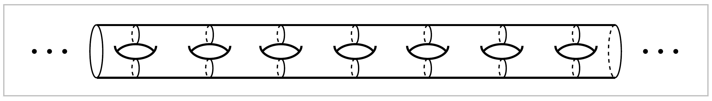
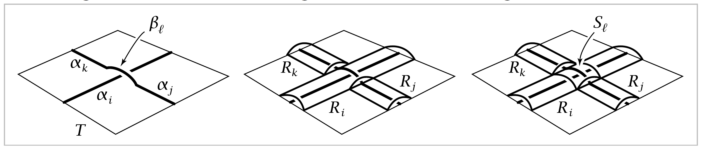

Exercises#
1. Show that the free product \(G * H\) of nontrivial groups \(G\) and \(H\) has trivial center, and that the only elements of \(G *H\) of finite order are the conjugates of finite-order elements of \(G\) and \(H\).
2. Let \(X \subset \mathbb{R}^m\) be the union of convex open sets \(X_1 \cdots X_n\) such that \(X_i \cap X_j \cap X_k \neq \emptyset\) for all \(i,j,k\). Show that \(X\) is simply-connected.
3. Show that the complement of a finite set of points in \(\mathbb{R}^n\) is simply-connected if \(n \geq 3\).
4. Let \(X \subset \mathbb{R}^3\) be the union of \(n\) lines through the origin. Compute \(\pi_1(\mathbb{R}^3-X)\).
5. Let \(X \subset \mathbb{R}^2\) be a connected graph that is the union of a finite number of straight line segments. Show that \(\pi_1(X)\) is free with a basis consisting of loops formed by suitably chosen paths in \(X\). [Assume the Jordan curve theorem for polygonal simple closed curves, which is equivalent to the case that \(X\) is homeomorphic to \(S^1\).]
6. Use Proposition 1.26 to show that the complement of a closed discrete subspace of \(\mathbb{R}^n\) is simply-connected if \(n \geq 3\).
7. Let \(X\) be the quotient space of \(S^2\) obtained by identifying the north and south poles to a single point. Put a cell complex structure on \(X\) and use this to compute \(\pi_1(X)\).
8. Compute the fundamental group of the space obtained from two tori \(S^1 \times S^1\) by identifying a circle \(S^1 \times \{x_0\}\) in one torus with the corresponding circle \(S^1 \times \{x_0\}\) in the other torus.
{kind=link}
9. In the surface \(M_g\) of genus \(g\), let \(C\) be a circle that separates \(M_g\) into two compact subsurfaces \(M_h'\) and \(M_k'\) obtained from the closed surfaces \(M_h\) and \(M_k\) by deleting an open disk from each. Show that \(M_h'\) does not retract onto its boundary circle \(C\), and hence \(M_g\) does not retarct onto \(C\). [Hint: abelianize \(\pi_1\).] But show that \(M_g\) does retract onto the nonseparating circle \(C'\) in the figure.
{kind=link}
10. Consider two arcs \(\alpha\) and \(\beta\) embedded \(D^2 \times I\) as shown in the figure. The loop \(\gamma\) is obviously nullhomotopic in \(D^2 \times I\), but show that here there is no nullhomotopy of \(\gamma\) in the complement of \(\alpha \cup \beta\).
11. The mapping torus \(T_f\) of a map \(f:X \rightarrow X\) is the quotient of \(X \times I\) obtained by identifying each point \((x,0)\) with \((f(x),1)\). In the case \(X =S^1 \vee S^1\) with \(f\) basepoint-preserving, compute a presentation for \(\pi_1(T_f)\) in terms of the induced map \(f_*:\pi_1(X) \rightarrow \pi_1(X)\). Do the same when \(X=S^1 \times S^1\). [One way to do this is to regard \(T_f\) as built from \(X \vee S^1\) by attaching cells.]
{kind=link}
12. The Klein bottle is usually pictured as a subspace of \(\mathbb{R}^3\) like the subspace \(X \subset \mathbb{R}^3\) shown in the first figure at the right. If one wanted a model that could actually function as a bottle, one would delete the open disk bounded by the circle of self-intersection of \(X\), producing a subspace \(Y \subset X\). Show that \(\pi_1(X) \approx \mathbb{Z} * \mathbb{Z}\) and that \(\pi_1(Y)\) has the presentation \(\langle a,b,c | aba^{-1}b^{-1}cb^\epsilon c^{-1} \rangle\) for \(\epsilon = \pm 1\). (Changing the sign of \(\epsilon\) gives an isomorphic group, as it happens.) Show also that \(\pi_1(y)\) is isomorphic to \(\pi_1(\mathbb{R}^3 - Z)\) for \(Z\) the graph shown in the figure. The groups \(\pi_1(X)\) and \(\pi_1(y)\) are not isomorphic, but this is not easy to prove; see the discussion in Example 1B.13.
13. The space \(Y\) in the preceding exercise can be obtained from a disk with two holes by identifying its three boundary circles. There are only two essentially different ways of identifying the three boundary circles. Show that the other way yields a space \(Z\) with \(\pi_1(Z)\) not isomorphic to \(\pi_1(Y)\). [Abelianize the fundamental groups to show they are not isomorphic.]
14. Consider the quotient space of a cube \(I^3\) obtained by identifying each square face with the opposite square face via the right-handed screw motion consisting of a translation by one unit in the direction perpendicular to the face combined with a one-quarter twist of the face about its center point. Show this quotient space \(X\) is a cell complex with two \(0\)-cells, four \(1\)-cells, three \(2\)-cells, and one \(3\)-cell. Using this structure, show that \(\pi_1(X)\) is the quaternion group \(\{ \pm1, \pm i, \pm j, \pm k\}\), of order eight.
15. Given a space \(X\) with basepoint \(x_0 \in X\), we may construct a CW complex \(L(X)\) having a single \(0\)-cell, a \(1\)-cell \(e^1_\gamma\) for each loop \(\gamma\) in \(X\) based at \(x_0\), and a \(2\)-cell \(e^2_\tau\) for each map \(\tau\) of a standard triangle \(PQR\) into \(X\) taking the three vertices \(P,\, Q\), and \(R\) of the triangle to \(x_0\). The \(2\)-cell \(e^2_\tau\) is attached to the three \(1\)-cells that are the loops obtained by restricting \(\tau\) to the three oriented edges \(PQ,\, PR\), and \(QR\). Show that the natural map \(L(X) \rightarrow X\) induces an isomorphism \(\pi_1(L(X)) \approx \pi_1(X, x_0)\).
16. Show that the fundamental group of the surface of infinite genus shown below is free on an infinite number of generators.
{kind=link}
17. Show that \(\pi_1(\mathbb{R}^2 - \mathbb{Q}^2)\) is uncountable.
18. In this problem we use the notions of suspension, reduced suspension, cone, and mapping cone defined in Chapter 0. Let \(X\) be the subspace of \(\mathbb{R}\) consisting of the sequence \(1,\frac{1}{2},\frac{1}{3},\frac{1}{4},\cdots\) together with its limit point \(0\).
For the suspension \(SX\), show that \(\pi_1(SX)\) is free on a countably infinite set of generators, and deduce that \(\pi_1(SX)\) is countable. In contrast to this, the reduced suspension \(\sigma X\), obtained from \(SX\) by collapsing the segment \(\{0\} \times I\) to a point, is the shrinking wedge of circles in Example 1.25, with an uncountable fundamental group.
Let \(C\) be the mapping cone of the quotient map \(SX \rightarrow \sigma X\). Show that \(\pi_1(C)\) is uncountable by constructing a homomorphism from \(\pi_1(C)\) onto \(\prod_\infty \mathbb{Z} / \bigoplus _\infty \mathbb{Z}\). Note that \(C\) is the reduced suspension of the cone \(CX\). Thus the reduced suspension of a contractible space need not be contractible, unlike the unreduced suspension.
19. Show that the subspace of \(\mathbb{R}^3\) that is the union of the spheres of radius \(\frac{1}{n}\) and center \((\frac{1}{n},0,0)\) for \(n=1,2,\cdots\) is simply-connected.
20. Let \(X\) be the subspace of \(\mathbb{R}^2\) that is the union of the circles \(C_n\) of radius \(n\) and center \((n,0)\) for \(n=1,2,\cdots\). Show that \(\pi_1(X)\) is the free group \({\Large *}_n\pi_1(C_n)\), the same as for the infinite wedge sum \(\bigvee _\infty S^1\). Show that \(X\) and \(\bigvee _\infty S^1\) are in fact homotopy equivalent, but not homeomorphic.
21. Show that the join \(X * Y\) of two nonempty spaces \(X\) and \(Y\) is simply-connected if \(X\) is path-connected.
22. In this exercise we desribe an algorithm for computing a presentation of the fundamental group of the complement of a smooth or piecewise linear knot \(K\) in \(\mathbb{R}^3\), called the Wirtinger presentation. To begin, we position the knot to lie almost flat on a table, so that \(K\) consists of finitely many disjoint arcs \(\alpha_i\) where it intersects the table top together with finitely many disjoint arcs \(\beta_l\) where \(K\) crosses over itself. The configuration at such crossing is shown in the first figure below.
{kind=link}
We build a \(2\)-dimensional complex \(X\) that is a deformation retract of \(\mathbb{R}^3-K\) by the following three steps. First, start with the rectangle \(T\) formed by the table top. Next, just above each arc \(\alpha_i\) place a long, thin rectangular strip \(R_i\), curved to run parallel to \(\alpha_i\) along the full length of \(\alpha_i\) and arched so that the two long edges of \(R_i\) are identified with points of \(T\), as in the second figure. Any arcs \(\beta_l\) that cross over \(\alpha_i\) are positioned to lie in \(R_i\). Finally, over each arc \(\beta_l\) put a square \(S_l\), bent downward along its four edges so that these edges are identified with points of three strips \(R_i,\quad R_j\), and \(R_k\) as in the fthird figure; namely, two opposite edges of \(S_l\) are identified with short edges of \(R_j\) and \(R_k\) and the other two opposite edges of \(S_l\) are identified with two arcs crossing the interior of \(R_i\). The knot \(K\) is now a subspace of \(X\), but after we lift \(K\) up slightly into the complement of \(X\), it becomes evident that \(X\) is a deformation retract of \(\mathbb{R}^3-K\).
- (a) Assuming this bit of geometry, show that \(\pi_1(\mathbb{R}^3-K)\) has a presentation with one
generator \(x_i\) for each strip \(R_i\) and one relation of the form \(x_i x_j x_i^{-1} = x_k\) for each square \(S_l\), where the indices are as in the figures above. [To get the correct signs it is helpful to use an orientation of \(K\).]
(b) Use this presentation to show that the abelianization of \(\pi_1(\mathbb{R}^3-K)\) is \(\mathbb{Z}\).